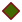

<!doctype html>
<html lang="en">
    <head>
        <meta charset="utf-8">
        <meta http-equiv="X-UA-Compatible" content="IE=edge">
        <meta name="viewport" content="initial-scale=1,user-scalable=no,maximum-scale=1,width=device-width">
        <meta name="mobile-web-app-capable" content="yes">
        <meta name="apple-mobile-web-app-capable" content="yes">
        <link rel="stylesheet" href="css/leaflet.css"><link rel="stylesheet" href="css/L.Control.Locate.min.css">
        <link rel="stylesheet" href="css/qgis2web.css"><link rel="stylesheet" href="css/fontawesome-all.min.css">
        <link rel="stylesheet" href="css/leaflet-control-geocoder.Geocoder.css">
        <link rel="stylesheet" href="css/leaflet-measure.css">
        <style>
        html, body, #map {
            width: 100%;
            height: 100%;
            padding: 0;
            margin: 0;
        }
        </style>
        <title></title>
    </head>
    <body>
        <div id="map">
        </div>
        <script src="js/qgis2web_expressions.js"></script>
        <script src="js/leaflet.js"></script><script src="js/L.Control.Locate.min.js"></script>
        <script src="js/leaflet-svg-shape-markers.min.js"></script>
        <script src="js/leaflet.rotatedMarker.js"></script>
        <script src="js/leaflet.pattern.js"></script>
        <script src="js/leaflet-hash.js"></script>
        <script src="js/Autolinker.min.js"></script>
        <script src="js/rbush.min.js"></script>
        <script src="js/labelgun.min.js"></script>
        <script src="js/labels.js"></script>
        <script src="js/leaflet-control-geocoder.Geocoder.js"></script>
        <script src="js/leaflet-measure.js"></script>
        <script src="data/HasilJangkauan_1.js"></script>
        <script src="data/JaringanJalan_2.js"></script>
        <script src="data/Halte_fixHalte_3.js"></script>
        <script>
        var highlightLayer;
        function highlightFeature(e) {
            highlightLayer = e.target;

            if (e.target.feature.geometry.type === 'LineString') {
              highlightLayer.setStyle({
                color: '#ffff00',
              });
            } else {
              highlightLayer.setStyle({
                fillColor: '#ffff00',
                fillOpacity: 1
              });
            }
        }
        var map = L.map('map', {
            zoomControl:true, maxZoom:28, minZoom:1
        }).fitBounds([[-7.305332564219786,112.75268579796722],[-7.262022847487573,112.81906190091296]]);
        var hash = new L.Hash(map);
        map.attributionControl.setPrefix('<a href="https://github.com/tomchadwin/qgis2web" target="_blank">qgis2web</a> &middot; <a href="https://leafletjs.com" title="A JS library for interactive maps">Leaflet</a> &middot; <a href="https://qgis.org">QGIS</a>');
        var autolinker = new Autolinker({truncate: {length: 30, location: 'smart'}});
        L.control.locate({locateOptions: {maxZoom: 19}}).addTo(map);
        var measureControl = new L.Control.Measure({
            position: 'topleft',
            primaryLengthUnit: 'meters',
            secondaryLengthUnit: 'kilometers',
            primaryAreaUnit: 'sqmeters',
            secondaryAreaUnit: 'hectares'
        });
        measureControl.addTo(map);
        document.getElementsByClassName('leaflet-control-measure-toggle')[0]
        .innerHTML = '';
        document.getElementsByClassName('leaflet-control-measure-toggle')[0]
        .className += ' fas fa-ruler';
        var bounds_group = new L.featureGroup([]);
        function setBounds() {
        }
        map.createPane('pane_OpenStreetMap_0');
        map.getPane('pane_OpenStreetMap_0').style.zIndex = 400;
        var layer_OpenStreetMap_0 = L.tileLayer('http://tile.openstreetmap.org/{z}/{x}/{y}.png', {
            pane: 'pane_OpenStreetMap_0',
            opacity: 1.0,
            attribution: '',
            minZoom: 1,
            maxZoom: 28,
            minNativeZoom: 0,
            maxNativeZoom: 20
        });
        layer_OpenStreetMap_0;
        map.addLayer(layer_OpenStreetMap_0);
        function pop_HasilJangkauan_1(feature, layer) {
            layer.on({
                mouseout: function(e) {
                    for (i in e.target._eventParents) {
                        e.target._eventParents[i].resetStyle(e.target);
                    }
                },
                mouseover: highlightFeature,
            });
            var popupContent = '<table>\
                    <tr>\
                        <th scope="row">fid</th>\
                        <td>' + (feature.properties['fid'] !== null ? autolinker.link(feature.properties['fid'].toLocaleString()) : '') + '</td>\
                    </tr>\
                    <tr>\
                        <th scope="row">id</th>\
                        <td>' + (feature.properties['id'] !== null ? autolinker.link(feature.properties['id'].toLocaleString()) : '') + '</td>\
                    </tr>\
                    <tr>\
                        <th scope="row">cost_level</th>\
                        <td>' + (feature.properties['cost_level'] !== null ? autolinker.link(feature.properties['cost_level'].toLocaleString()) : '') + '</td>\
                    </tr>\
                    <tr>\
                        <th scope="row">fid_2</th>\
                        <td>' + (feature.properties['fid_2'] !== null ? autolinker.link(feature.properties['fid_2'].toLocaleString()) : '') + '</td>\
                    </tr>\
                    <tr>\
                        <th scope="row">FID_Batas_</th>\
                        <td>' + (feature.properties['FID_Batas_'] !== null ? autolinker.link(feature.properties['FID_Batas_'].toLocaleString()) : '') + '</td>\
                    </tr>\
                    <tr>\
                        <th scope="row">WADMKC</th>\
                        <td>' + (feature.properties['WADMKC'] !== null ? autolinker.link(feature.properties['WADMKC'].toLocaleString()) : '') + '</td>\
                    </tr>\
                    <tr>\
                        <th scope="row">Shape_Area</th>\
                        <td>' + (feature.properties['Shape_Area'] !== null ? autolinker.link(feature.properties['Shape_Area'].toLocaleString()) : '') + '</td>\
                    </tr>\
                    <tr>\
                        <th scope="row">UP</th>\
                        <td>' + (feature.properties['UP'] !== null ? autolinker.link(feature.properties['UP'].toLocaleString()) : '') + '</td>\
                    </tr>\
                    <tr>\
                        <td colspan="2">' + (feature.properties['Cost_Lvl'] !== null ? autolinker.link(feature.properties['Cost_Lvl'].toLocaleString()) : '') + '</td>\
                    </tr>\
                </table>';
            layer.bindPopup(popupContent, {maxHeight: 400});
        }

        function style_HasilJangkauan_1_0(feature) {
            switch(String(feature.properties['Cost_Lvl'])) {
                case '400':
                    return {
                pane: 'pane_HasilJangkauan_1',
                opacity: 1,
                color: 'rgba(35,35,35,1.0)',
                dashArray: '',
                lineCap: 'butt',
                lineJoin: 'miter',
                weight: 1.0, 
                fill: true,
                fillOpacity: 1,
                fillColor: 'rgba(240,249,33,1.0)',
                interactive: true,
            }
                    break;
                case '800':
                    return {
                pane: 'pane_HasilJangkauan_1',
                opacity: 1,
                color: 'rgba(35,35,35,1.0)',
                dashArray: '',
                lineCap: 'butt',
                lineJoin: 'miter',
                weight: 1.0, 
                fill: true,
                fillOpacity: 1,
                fillColor: 'rgba(237,121,83,1.0)',
                interactive: true,
            }
                    break;
                case '1200':
                    return {
                pane: 'pane_HasilJangkauan_1',
                opacity: 1,
                color: 'rgba(35,35,35,1.0)',
                dashArray: '',
                lineCap: 'butt',
                lineJoin: 'miter',
                weight: 1.0, 
                fill: true,
                fillOpacity: 1,
                fillColor: 'rgba(156,23,158,1.0)',
                interactive: true,
            }
                    break;
                default:
                    return {
                pane: 'pane_HasilJangkauan_1',
                opacity: 1,
                color: 'rgba(35,35,35,1.0)',
                dashArray: '',
                lineCap: 'butt',
                lineJoin: 'miter',
                weight: 1.0, 
                fill: true,
                fillOpacity: 1,
                fillColor: 'rgba(13,8,135,1.0)',
                interactive: true,
            }
                    break;
            }
        }
        map.createPane('pane_HasilJangkauan_1');
        map.getPane('pane_HasilJangkauan_1').style.zIndex = 401;
        map.getPane('pane_HasilJangkauan_1').style['mix-blend-mode'] = 'normal';
        var layer_HasilJangkauan_1 = new L.geoJson(json_HasilJangkauan_1, {
            attribution: '',
            interactive: true,
            dataVar: 'json_HasilJangkauan_1',
            layerName: 'layer_HasilJangkauan_1',
            pane: 'pane_HasilJangkauan_1',
            onEachFeature: pop_HasilJangkauan_1,
            style: style_HasilJangkauan_1_0,
        });
        bounds_group.addLayer(layer_HasilJangkauan_1);
        map.addLayer(layer_HasilJangkauan_1);
        function pop_JaringanJalan_2(feature, layer) {
            layer.on({
                mouseout: function(e) {
                    for (i in e.target._eventParents) {
                        e.target._eventParents[i].resetStyle(e.target);
                    }
                },
                mouseover: highlightFeature,
            });
            var popupContent = '<table>\
                    <tr>\
                        <th scope="row">fid</th>\
                        <td>' + (feature.properties['fid'] !== null ? autolinker.link(feature.properties['fid'].toLocaleString()) : '') + '</td>\
                    </tr>\
                    <tr>\
                        <th scope="row">osm_id</th>\
                        <td>' + (feature.properties['osm_id'] !== null ? autolinker.link(feature.properties['osm_id'].toLocaleString()) : '') + '</td>\
                    </tr>\
                    <tr>\
                        <th scope="row">bridge</th>\
                        <td>' + (feature.properties['bridge'] !== null ? autolinker.link(feature.properties['bridge'].toLocaleString()) : '') + '</td>\
                    </tr>\
                    <tr>\
                        <th scope="row">tunnel</th>\
                        <td>' + (feature.properties['tunnel'] !== null ? autolinker.link(feature.properties['tunnel'].toLocaleString()) : '') + '</td>\
                    </tr>\
                    <tr>\
                        <th scope="row">width</th>\
                        <td>' + (feature.properties['width'] !== null ? autolinker.link(feature.properties['width'].toLocaleString()) : '') + '</td>\
                    </tr>\
                    <tr>\
                        <th scope="row">highway</th>\
                        <td>' + (feature.properties['highway'] !== null ? autolinker.link(feature.properties['highway'].toLocaleString()) : '') + '</td>\
                    </tr>\
                    <tr>\
                        <th scope="row">surface</th>\
                        <td>' + (feature.properties['surface'] !== null ? autolinker.link(feature.properties['surface'].toLocaleString()) : '') + '</td>\
                    </tr>\
                    <tr>\
                        <th scope="row">railway</th>\
                        <td>' + (feature.properties['railway'] !== null ? autolinker.link(feature.properties['railway'].toLocaleString()) : '') + '</td>\
                    </tr>\
                    <tr>\
                        <th scope="row">layer</th>\
                        <td>' + (feature.properties['layer'] !== null ? autolinker.link(feature.properties['layer'].toLocaleString()) : '') + '</td>\
                    </tr>\
                    <tr>\
                        <th scope="row">oneway</th>\
                        <td>' + (feature.properties['oneway'] !== null ? autolinker.link(feature.properties['oneway'].toLocaleString()) : '') + '</td>\
                    </tr>\
                    <tr>\
                        <th scope="row">name</th>\
                        <td>' + (feature.properties['name'] !== null ? autolinker.link(feature.properties['name'].toLocaleString()) : '') + '</td>\
                    </tr>\
                    <tr>\
                        <th scope="row">smoothness</th>\
                        <td>' + (feature.properties['smoothness'] !== null ? autolinker.link(feature.properties['smoothness'].toLocaleString()) : '') + '</td>\
                    </tr>\
                </table>';
            layer.bindPopup(popupContent, {maxHeight: 400});
        }

        function style_JaringanJalan_2_0() {
            return {
                pane: 'pane_JaringanJalan_2',
                opacity: 1,
                color: 'rgba(152,125,183,1.0)',
                dashArray: '',
                lineCap: 'square',
                lineJoin: 'bevel',
                weight: 1.0,
                fillOpacity: 0,
                interactive: true,
            }
        }
        map.createPane('pane_JaringanJalan_2');
        map.getPane('pane_JaringanJalan_2').style.zIndex = 402;
        map.getPane('pane_JaringanJalan_2').style['mix-blend-mode'] = 'normal';
        var layer_JaringanJalan_2 = new L.geoJson(json_JaringanJalan_2, {
            attribution: '',
            interactive: true,
            dataVar: 'json_JaringanJalan_2',
            layerName: 'layer_JaringanJalan_2',
            pane: 'pane_JaringanJalan_2',
            onEachFeature: pop_JaringanJalan_2,
            style: style_JaringanJalan_2_0,
        });
        bounds_group.addLayer(layer_JaringanJalan_2);
        function pop_Halte_fixHalte_3(feature, layer) {
            layer.on({
                mouseout: function(e) {
                    for (i in e.target._eventParents) {
                        e.target._eventParents[i].resetStyle(e.target);
                    }
                },
                mouseover: highlightFeature,
            });
            var popupContent = '<table>\
                    <tr>\
                        <th scope="row">fid</th>\
                        <td>' + (feature.properties['fid'] !== null ? autolinker.link(feature.properties['fid'].toLocaleString()) : '') + '</td>\
                    </tr>\
                    <tr>\
                        <th scope="row">Name</th>\
                        <td>' + (feature.properties['Name'] !== null ? autolinker.link(feature.properties['Name'].toLocaleString()) : '') + '</td>\
                    </tr>\
                    <tr>\
                        <th scope="row">Deskripsi Halte_Koridor</th>\
                        <td>' + (feature.properties['Deskripsi Halte_Koridor'] !== null ? autolinker.link(feature.properties['Deskripsi Halte_Koridor'].toLocaleString()) : '') + '</td>\
                    </tr>\
                    <tr>\
                        <th scope="row">Deskripsi Halte_Jenis</th>\
                        <td>' + (feature.properties['Deskripsi Halte_Jenis'] !== null ? autolinker.link(feature.properties['Deskripsi Halte_Jenis'].toLocaleString()) : '') + '</td>\
                    </tr>\
                    <tr>\
                        <th scope="row">Deskripsi Halte_Layanan</th>\
                        <td>' + (feature.properties['Deskripsi Halte_Layanan'] !== null ? autolinker.link(feature.properties['Deskripsi Halte_Layanan'].toLocaleString()) : '') + '</td>\
                    </tr>\
                    <tr>\
                        <th scope="row">Deskripsi Halte_Provider</th>\
                        <td>' + (feature.properties['Deskripsi Halte_Provider'] !== null ? autolinker.link(feature.properties['Deskripsi Halte_Provider'].toLocaleString()) : '') + '</td>\
                    </tr>\
                </table>';
            layer.bindPopup(popupContent, {maxHeight: 400});
        }

        function style_Halte_fixHalte_3_0(feature) {
            switch(String(feature.properties['Deskripsi Halte_Jenis'])) {
                case 'Halte Transfer':
                    return {
                pane: 'pane_Halte_fixHalte_3',
                shape: 'diamond',
                radius: 8.8,
                opacity: 1,
                color: 'rgba(61,128,53,1.0)',
                dashArray: '',
                lineCap: 'butt',
                lineJoin: 'miter',
                weight: 2.0,
                fill: true,
                fillOpacity: 1,
                fillColor: 'rgba(235,0,4,1.0)',
                interactive: true,
            }
                    break;
                case 'Halte Tunggal':
                    return {
                pane: 'pane_Halte_fixHalte_3',
                shape: 'diamond',
                radius: 8.8,
                opacity: 1,
                color: 'rgba(128,17,25,1.0)',
                dashArray: '',
                lineCap: 'butt',
                lineJoin: 'miter',
                weight: 2.0,
                fill: true,
                fillOpacity: 1,
                fillColor: 'rgba(65,105,0,1.0)',
                interactive: true,
            }
                    break;
            }
        }
        map.createPane('pane_Halte_fixHalte_3');
        map.getPane('pane_Halte_fixHalte_3').style.zIndex = 403;
        map.getPane('pane_Halte_fixHalte_3').style['mix-blend-mode'] = 'normal';
        var layer_Halte_fixHalte_3 = new L.geoJson(json_Halte_fixHalte_3, {
            attribution: '',
            interactive: true,
            dataVar: 'json_Halte_fixHalte_3',
            layerName: 'layer_Halte_fixHalte_3',
            pane: 'pane_Halte_fixHalte_3',
            onEachFeature: pop_Halte_fixHalte_3,
            pointToLayer: function (feature, latlng) {
                var context = {
                    feature: feature,
                    variables: {}
                };
                return L.shapeMarker(latlng, style_Halte_fixHalte_3_0(feature));
            },
        });
        bounds_group.addLayer(layer_Halte_fixHalte_3);
        map.addLayer(layer_Halte_fixHalte_3);
        var osmGeocoder = new L.Control.Geocoder({
            collapsed: true,
            position: 'topleft',
            text: 'Search',
            title: 'Testing'
        }).addTo(map);
        document.getElementsByClassName('leaflet-control-geocoder-icon')[0]
        .className += ' fa fa-search';
        document.getElementsByClassName('leaflet-control-geocoder-icon')[0]
        .title += 'Search for a place';
        var baseMaps = {};
        L.control.layers(baseMaps,{'Halte_fix — Halte<br /><table><tr><td style="text-align: center;"></td><td>Halte Transfer</td></tr><tr><td style="text-align: center;"></td><td>Halte Tunggal</td></tr></table>': layer_Halte_fixHalte_3,' Jaringan Jalan': layer_JaringanJalan_2,'Hasil Jangkauan<br /><table><tr><td style="text-align: center;"></td><td>400</td></tr><tr><td style="text-align: center;"></td><td>800</td></tr><tr><td style="text-align: center;"></td><td>1200</td></tr><tr><td style="text-align: center;"></td><td>>1200</td></tr></table>': layer_HasilJangkauan_1,"Open Street Map": layer_OpenStreetMap_0,},{collapsed:false}).addTo(map);
        setBounds();
        </script>
    </body>
</html>
